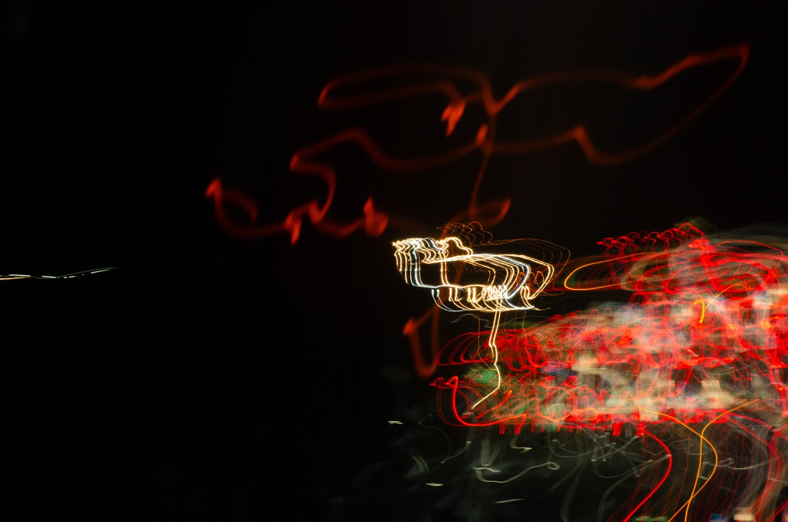

Have you ever noticed that in some photos, there seem to be beams of light forming shapes that seem artificially created? We can thank the technique of light painting for this effect. Light painting is a style of photography in which the camera’s shutter remains open for an extended period of time. This contrasts with the quick shutter click of a camera that clearly captures a single moment in a traditional photo. Lowering the shutter speed allows for the photographer to create glowing trails and patterns produced by moving lights during the exposure. This is my personal favorite form of photography because it allows the artist to have more creative liberty than a typical photo. Here are some of my attempts at the art:
Flame in Motion - Cindy Wang '26
Description: This piece is called “Flame in Motion”, and it was created by moving a combination of orange and blue lights during the exposure time. Admittingly, when I was first creating this piece, I was aiming to draw the shape of a cat. However, even though the finished result didn’t resemble that animal, it still created a beautiful image that, to me, seemed to resemble a bird-like creature eating the orange beam.

Highway Lights - Cindy Wang ‘26
Description: This piece is called “Highway Lights” and, as its name suggests, I took this picture on a highway during a road trip when my parents and I were driving back to our hotel for the night. The various repeating shapes track the various cars passing by from the other side of the highway, and the other lines resemble the ones driving on my side. I think that it is really interesting that such a simple action such as driving down a highway at night could create art – revealing how art can be everywhere.
- Cindy Wang '26